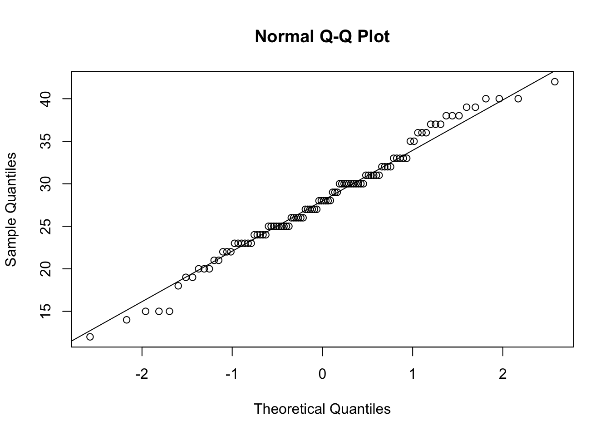
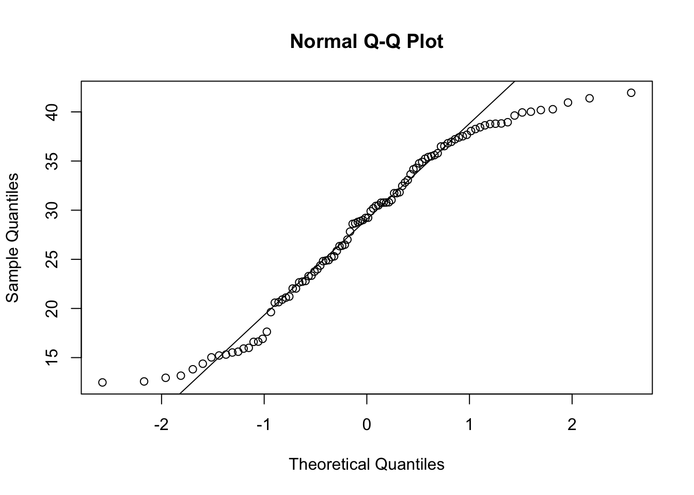
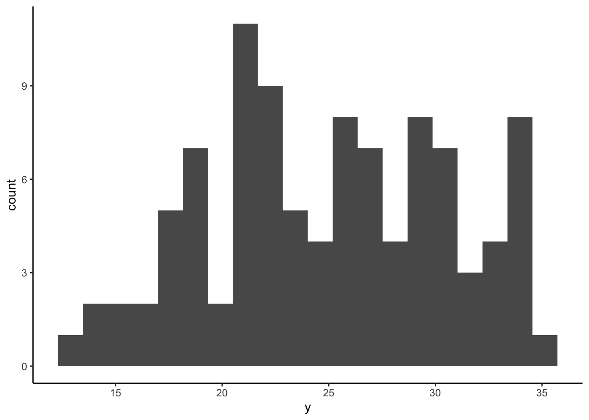
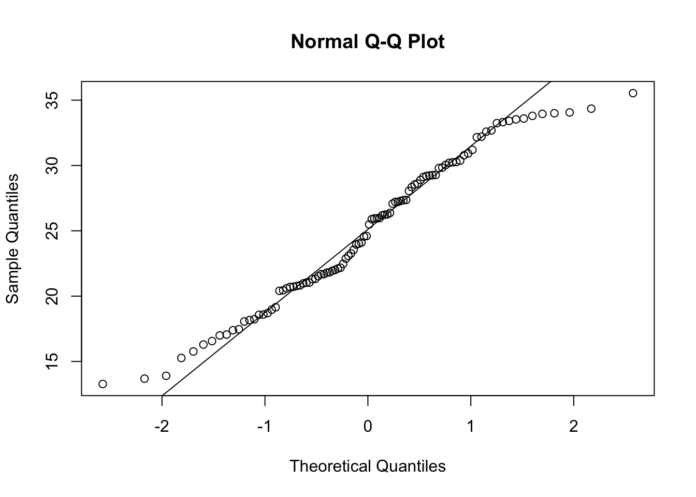
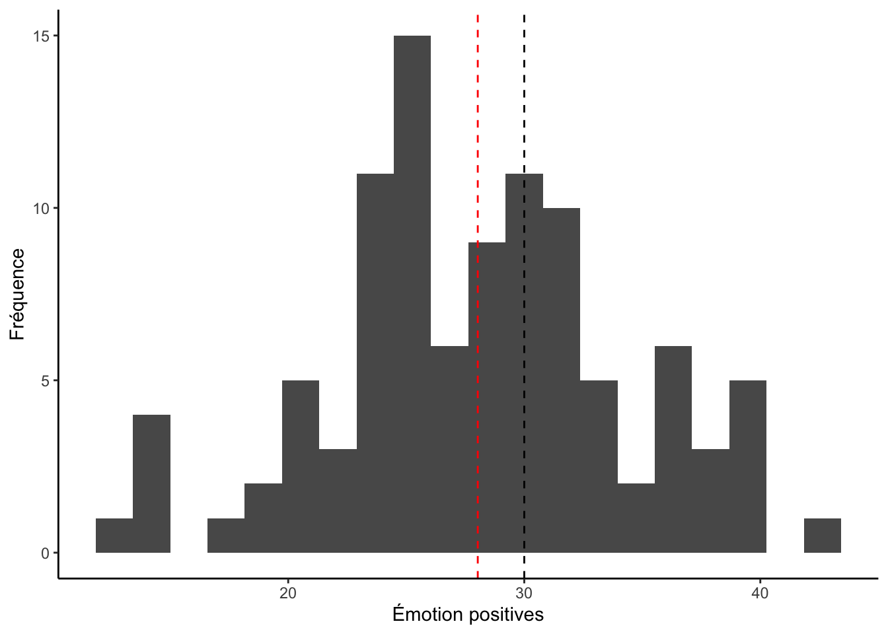
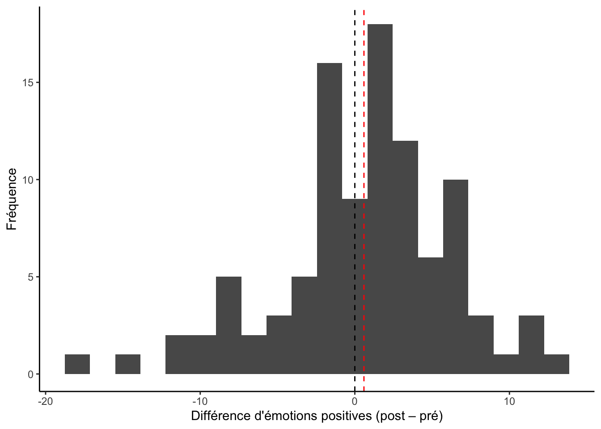
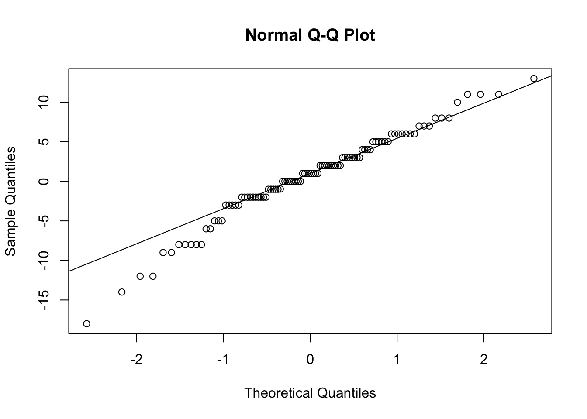
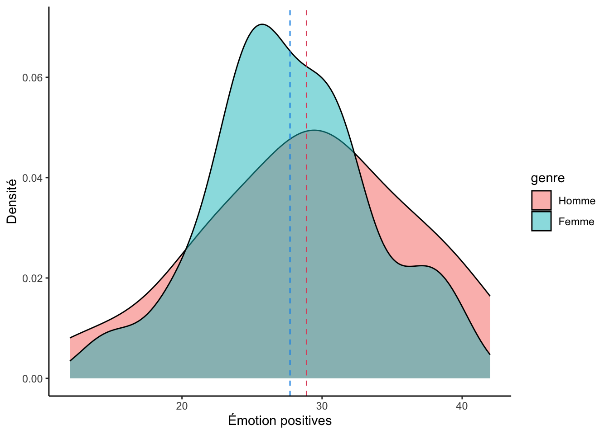

Test-t
Xavier La Rochelle
2024-08-28
Important : Ce guide assume que vous savez comment :
- Rédiger un script
RMarkdown
- Installer et activer des packages
- Importer une base de données
- Préparer des données
Vous pouvez cliquer sur les liens ci-dessus pour consulter les guides associées.
0.1 Importer et préparer les données
Dans ce guide, nous utiliserons deux variables du fichier
data_visualisation.csv, soit le Genre (genre)
et les émotions positives avant (emotionPositive_Pre) et
après (emotionPositive_Post) une intervention
psychosociale. Pour vous évitez de tout re-coder, j’ai pris le temps
d’écrire la syntaxe nécessaire pour importer et préparer les données
:
# Packages
library(readr)
library(tibble)
# Importer les données (data_visualisation.csv)
donnees_brutes <- read_csv("folder path")
# Préparer les données
df <- tibble(id = 1:nrow(donnees_brutes))
df$intervention <- factor(donnees_brutes$Intervention,
levels = c(1,2),
labels = c("BPS",
"Contrôle"))
df$genre <- factor(donnees_brutes$Genre,
levels = c(1,2),
labels = c("Homme",
"Femme"))
df$emotionPositive_Pre <- donnees_brutes$PANAS_Pos_Pre
df$emotionPositive_Post <- donnees_brutes$PANAS_Pos_PostPour suivre les exemples dans ce guide, vous devrez donc :
1. avoir téléchargé le fichier data_visualisation.csv sur
Studium
2. noter le "folder path"
3. exécuter la syntaxe ci-dessus (en changeant le
"folder path").
Voici à quoi devrait ressembler votre banque de données après l’étape de préparation :
df## # A tibble: 100 × 5
## id intervention genre emotionPositive_Pre emotionPositive_Post
## <int> <fct> <fct> <dbl> <dbl>
## 1 1 BPS Femme 27 24
## 2 2 Contrôle Femme 27 33
## 3 3 BPS Femme 20 20
## 4 4 Contrôle Femme 26 20
## 5 5 BPS Femme 23 14
## 6 6 Contrôle Femme 21 32
## 7 7 BPS Femme 24 29
## 8 8 BPS Femme 29 28.03
## 9 9 BPS Homme 27 35
## 10 10 Contrôle Femme 41 23
## # ℹ 90 more rows1 Test-t
Ce guide présente les étapes pour conduire trois types de test-t, soit le test-t à un échantillon, le test-t à deux échantillons indépendants et le test-t à deux échantillons dépendants (ou jumelés).
1.1 Postulat de normalité
Avant de présenter comment effectuer ces différents tests dans R, nous aborderons la vérification du postulat de normalité. En effet, toutes les formes du test-t postulent la normalité de l’échantillon (ou des échantillons) utilisé(s). De plus, contrairement aux postulats de continuité et d’indépendance des scores (uniques ou jumelés), le postulat de normalité est le seul qui nécessite l’utilisation de R.
Plusieurs méthode existent pour vérifier la normalité. Nous en verrons trois :
- Le test Shapiro-Wilk
- Le QQplot
- Les indices d’asymétrie et d’aplatissement
À noter pour le TP :
Même si les trois méthode sont présenté dans ce guide, vous aurez
uniquement besoin d’utiliser le test Shapiro-Wilk et le QQplot pour
votre TP.
1.1.1 Test de Shapiro-Wilk
Le test de Shapiro-Wilk est un test statistique utilisé pour déterminer si un échantillon de données suit ou non une distribution normale. Il est basé sur la comparaison entre les valeurs observées dans l’échantillon et les valeurs attendues d’une distribution normale. Si les valeurs observées sont proches des valeurs attendues, alors l’échantillon peut être considéré comme ayant une distribution normale.
Il importe de noter que le test de Shapiro-Wilk n’est généralement
pas utilisé dans les grands échantillons car il est très sensible à la
taille d’échantillon. Autrement dit, le test de Shapiro-Wilk est presque
toujours significatif (et donc peu fiable) lorsque la taille
d’échantillon est élevée. Pour cette raison, la fonction présentée
ci-dessous shapiro.test() retourne un message d’erreur si
la taille d’échantillon est supérieur à 5000.
Le test de Shapiro-Wilk fournit une statistique W et une valeur de p associée. Si la valeur de p est inférieure à un seuil de signification donné, généralement 0,05, alors l’hypothèse nulle selon laquelle l’échantillon suit une distribution normale est rejetée. Si la valeur de p est supérieure au seuil de signification, alors l’hypothèse nulle n’est pas rejetée, ce qui signifie que l’échantillon peut être considéré comme ayant une distribution normale.
Voici la syntaxe :
shapiro.test(df$emotionPositive_Pre)##
## Shapiro-Wilk normality test
##
## data: df$emotionPositive_Pre
## W = 0.98799, p-value = 0.5078On observe que le test de Shapiro-Wilk n’est pas significatif pour notre échantillon (\(W ≈ ,99; p > ,05\)), indiquant ainsi que l’échantillon ne diffère pas significativement de la normalité.
1.1.2 QQplot
Le test QQplot, abréviation de Quantile-Quantile plot, est une méthode graphique pour évaluer si un échantillon de données suit une distribution donnée, comme une distribution normale.
Le test QQplot trace les quantiles des données observées sur l’axe des x et les quantiles correspondants de la distribution théorique sur l’axe des y. Si les données observées suivent exactement la distribution théorique, alors les points sur le graphique seront alignés le long d’une ligne droite diagonale. Si les points s’éloignent de cette ligne diagonale, cela suggère que les données observées ne suivent pas exactement la distribution théorique. Si les points du graphique s’alignent approximativement le long de la ligne diagonale, cela suggère que les données sont normalement distribuées.
Le test QQplot est utile car il permet de visualiser les différences entre les distributions théoriques et les données observées de manière intuitive et facilement compréhensible. Cependant, il ne fournit pas une mesure quantitative de la différence entre les distributions. Voici comment obtenir un QQplot dans R :
qqnorm(df$emotionPositive_Post)
qqline(df$emotionPositive_Post)
Ici, on peut conclure que les observations semblent respecter une distribution normale puisqu’on observe une différence minime entre la position des points et la ligne représentant la distribution théorique. On pourrait noter une légère forme sinusoïdale aux extrémités de la distribution, mais rien de clairement anormale.
Puisque le QQplot est une vérification pûrement visuelle de la normalité, il est pertinent de savoir à quoi pourrait ressembler un QQplot qui ne respecte pas la normalité. À titre de contre-exemple, voici le QQplot d’un échantillon provenant d’une distribution non-normale :
y <- runif(100, min = 12, max = 42)Les observations de la nouvelle variable créée (y) sont
des observations aléatoires provennant d’une distribution uniforme
(runif()), ce qui signifie que toutes les valeurs à
l’intérieur de l’intervalle déclaré (min = 12 et
max = 42) sont également probables. On obtient une
distribution qui ressemble à ceci :
ggplot(NULL, aes(y)) +
geom_histogram(bins = 20) +
theme_classic()
On peut déjà constater visuellement que les observations ne semblent pas se distribué normalement autour de la moyenne. Ce type de distribution génère un QQplot qui ressemble à ceci :
qqnorm(y)
qqline(y)
L’anormalité de cet échantillon est particulièrement visible aux extrémités, où les quantiles observées (les points) diffèrent largement des quantiles théoriques (la ligne).
Comme dernier exemple, simulons une variable (y)
composée de deux autres variables (a et b)
provenant de distributions normales dont la moyenne diffère (\(\mu_a = 20; \mu_b = 30\)) :
a <- rnorm(n = 50, mean = 20, sd = 3)
b <- rnorm(n = 50, mean = 30, sd = 3)
y <- c(a, b)On pourrait donc dire que la variable y est en quelque
sorte bimodale, ce qui se reflète dans l’histogramme ci-dessous :
ggplot(NULL, aes(y)) +
geom_histogram(bins = 20) +
theme_classic()
Le QQplot de ce type de distribution ressemble à ceci :
qqnorm(y)
qqline(y)
On constate que ce QQplot présente une forme sinusoïdale encore plus prononcée que celui de l’exemple précédent, différant visiblement des quantiles théoriques.
1.1.3 Indices d’asymétrie de d’applatissement
La distribution normale (ou gaussienne) est caractérisée par une courbe en forme de cloche symétrique. Cela signifie que la moyenne, la médiane et le mode sont égaux et que la distribution est symétrique par rapport à la moyenne. Si une distribution n’est pas normale, elle peut être asymétrie, trop plate ou trop pointue.
L’indice d’aplatissement (kurtosis) mesure à quel point une distribution est aplatie par rapport à une distribution normale. Plus précisément, il compare la hauteur et la largeur de la courbe de distribution. Un indice d’aplatissement égal à zéro indique une distribution normale, tandis qu’un indice supérieur à zéro indique une distribution plus aplatie (par exemple, une distribution leptokurtique) et un indice inférieur à zéro indique une distribution moins aplatie (par exemple, une distribution platykurique).
L’indice d’asymétrie (skewness) mesure à quel point une distribution est biaisée par rapport à une distribution normale. Si une distribution est symétrique, l’indice d’asymétrie est égal à zéro. Si la distribution est décalée vers la droite (vers des valeurs plus élevées), l’indice d’asymétrie est positif. Si la distribution est décalée vers la gauche (vers des valeurs plus faibles), l’indice d’asymétrie est négatif.
Lorsqu’on vérifie la normalité à l’aide de ces indices, on cherche
généralement à ce qu’ils se trouvent à l’intérieur d’un intervalle de
±1. Vous pouvez les obtenir à l’aide des fonctions skew()
et kurtosi() du package psych :
library(psych)
skew(df$emotionPositive_Post)## [1] -0.05360055kurtosi(df$emotionPositive_Post)## [1] -0.2324027Dans ce cas-ci, on observe que l’échantillon présente une faible asymétrie négative (\(\text{Skew} ≈ -0,05\)) et une forme légèrement platykurtique (\(\text{Kurt} ≈ -0,23\)). Toutefois, puisque ces indices demeurent à l’intérieur d’un intervalle de ±1, on peut conclure que notre échantillon respecte le postulat de normalité.
1.2 Test-t à un échantillon
Pour exemplifier le test-t à un échantillon, nous utiliserons la
variable « émotions positives » mesurée après l’intervention
psychosociale (emotionPositives_Post). Nous comparerons la
moyenne de cette échantillon à une moyenne fictive représentant la
population pour cette variable, qui sera de 30. Ainsi, le test
d’hypothèse que nous posons est :
\[
H_0 : \mu = 30\\
H_1 : \mu ≠ 30
\]
On peut se représenter visuellement cette hypothèse avec le graphique suivante :
library(ggplot2)
ggplot(df, aes(x = emotionPositive_Post)) +
geom_histogram(bins = 20) +
geom_vline(xintercept = 30, lty = 2) +
geom_vline(xintercept = mean(df$emotionPositive_Post), lty = 2, col = "red") +
labs(x = "Émotion positives", y = "Fréquence") +
theme_classic()
Dans cet histogramme, la ligne pointillée noire représente la moyenne de la population (\(H_0\)) et la rouge représente la moyenne observée de l’échantillon (\(H_1\)). On observe bel et bien une différence entre ces moyennes mais il n’est pas évident de déterminer visuellement si cette différence est significative. Le test-t offre une manière systématique de répondre à cette question.
1.2.1 Postulats
Le test-t à un échantillon comprend trois postulats :
- La variable est continue : ☑
- Les observations sont indépendantes : ☑
- La variable doit être normalement distribuée : à vérifier
Pour les exemples, nous utiliserons le test de Shapiro-Wilk.
shapiro.test(df$emotionPositive_Post)##
## Shapiro-Wilk normality test
##
## data: df$emotionPositive_Post
## W = 0.98634, p-value = 0.3946On observe que le test de Shapiro-Wilk n’est pas significatif pour notre échantillon (\(W ≈ ,99; p > ,05\)), indiquant ainsi que l’échantillon ne diffère pas significativement de la normalité. Nous pouvons donc procédé avec le test-t.
Voici le QQplot :
qqnorm(df$emotionPositive_Post)
qqline(df$emotionPositive_Post)1.2.2 Faire le test
Pour effectuer le test-t dans R, nous utiliserons la fonction
t.test() du package stats.
Le premier argument de la fonction t.test() est
simplement la variable continue qui représente notre échantillon. Le
deuxième argument désigne la valeur de la moyenne populationnelle. Comme
mentionné précédemment, nous utilisons une moyenne populationnelle
fictive de 30.
Le dernier argument (alternative =) désigne la direction
de notre hypothèse. Dans ce cas-ci, nous n’avions pas d’hypothèse quant
à la différence entre la moyenne de notre échantillon et la moyenne
populationnelle – nous souhaitons seulement savoir si elle en diffère
(\(H_1 : \mu ≠ 30\)). Nous spécifions
donc une hypothèse bilatérale en indiquant "two.sided". Cet
argument pourrait techniquement être omis puisque la fonction
t.test() effectue une hypothèse bidirectionnelle
(alternative = "two.sided") par défaut. Toutefois, il est
bon de toujours s’assurer que l’anaylse effectuée reflète bien votre
question de recherche. Par exemple, si nous avions posé l’hypothèse que
le niveau d’émotions positives après l’intervention est supérieur à la
moyenne populationnelle (\(H_1 : \mu >
30\)), il aurait été important de modifier la valeur de
l’argument alternative par "greater" au lieu
de "two.sided". Inversement, on assigne "less"
pour indiquer l’hypothèse d’une moyenne inférieure à la moyenne
populationnelle.
Voici la syntaxe :
t.test(df$emotionPositive_Post,
mu = 30,
alternative = "two.sided")##
## One Sample t-test
##
## data: df$emotionPositive_Post
## t = -3.1172, df = 99, p-value = 0.00239
## alternative hypothesis: true mean is not equal to 30
## 95 percent confidence interval:
## 26.77650 29.28411
## sample estimates:
## mean of x
## 28.0303Ce output nous indique que la moyenne de notre échantillon (\(M = 28,03\)) est significativement inférieur à la moyenne de la population (\(t(99) ≈ -3,12; p < ,05\)).
1.2.3 Calculer la taille d’effet
La fonction t.test() ne fournit malheureusement pas
directement la taille d’effet (d de Cohen) de la différence
observée. Cette fonction fournie toutefois l’indice t de
Student, dont la valeur absolue peut être convertie en D de
Cohen si on connait la taille de l’échantillon. Pour ce faire, nous
utiliserons la fonction t2d() du package psych
et la fonction abs() du package R de base :
library(psych)
t2d(abs(-3.1172), n1 = 100)## [1] 0.31172Voici les critères d’interprétation du D de Cohen :
- Effet minime: < 0,20
- Petit effet: 0,20-0,50
- Effet moyen: 0,50-0,80
- Grand effet: > 0,80
Nous pouvons donc conclure que la différence observée entre la moyenne de notre échantillon et celle de la population (\(d ≈ 0,31\)) correspond à une petite taille d’effet.
1.3 Test-t à deux échantillons jumelés
Le test t apparié (ou “paired t-test” en anglais) est une méthode statistique qui permet de comparer les moyennes de deux échantillons appariés, c’est-à-dire deux groupes de données qui sont liés l’un à l’autre d’une manière ou d’une autre. Lorsqu’on utilise cette méthode, on calcule d’abord la différence entre les valeurs de chaque paire de données. Ensuite, on calcule la moyenne de ces différences et on la divise par l’écart-type des différences pour obtenir la statistique de test t. On utilise ensuite cette statistique pour déterminer si la différence entre les moyennes des deux échantillons est significative ou non.
Pour cet exemple, nous utiliserons les différences d’émotions
positives avant et après l’intervention, soit les variables
emotionPositive_Pre et emotionPositive_Post
respectivement dans notre banque de données. Ces variables nous donnent
également l’occasion d’illustrer une hypothèse directionnelle, puisqu’il
est logique de s’attendre à ce que l’intervention augmente les émotions
positives. Ainsi, l’hypothèse que nous posons se traduit
mathématiquement par la déclaration suivante :
\[
H_0 : \mu_{\Delta x} = 0 \\
H_1 : \mu_{\Delta x} > 0\\
\text{où}\; \Delta x = x_{\text{post}} - x_{\text{pré}}
\]
Puisqu’on s’attend à ce que le niveau d’émotions positives après l’intervention soit supérieur au niveau avant l’intervention, soustraire \(x_{\text{post}}\) par \(x_{\text{pré}}\) devrait résulter en une différence (\(\Delta x\)) positive, d’où \(\mu_{\Delta x} > 0\). Ainsi, l’ordre des groupes a beaucoup d’importance dans le contexte d’un test-t à échantillons jumelés.
Voici un exemple de graphique qui illustre ce test d’hypothèses :
ggplot(df, aes(emotionPositive_Post - emotionPositive_Pre)) +
geom_histogram(bins = 20) +
geom_vline(xintercept = 0, lty = 2) +
geom_vline(xintercept = mean(df$emotionPositive_Post - df$emotionPositive_Pre), col = "red", lty = 2) +
labs(x = "Différence d'émotions positives (post – pré)", y = "Fréquence") +
theme_classic()
Cet histogramme est très similaire à celui présenté pour le test-t à un échantillon. La ligne pointillée noire représente une différence moyenne de 0 (\(H_0\)) et la rouge représente la différence moyenne observée de l’échantillon (\(H_1\)). Ainsi, on cherche à savoir si la différence moyenne d’émotions positives est significativement supérieure à 0.
1.3.1 Postulats
Voici les postulats du test-t à échantillons jumelés :
- La variable est continue : ☑
- Les observations (différences de valeur) sont indépendantes : ☑
- Les différences de valeur doivent être à peu près normalement distribuées : à vérifier
La seule différence avec le test-t à un échantillon est que le postulat de normalité et d’indépendance s’applique aux différences de valeurs et non aux valeurs en tant que tel. Ainsi, on peut vérifier la normalité des différences de valeurs avec la syntaxe suivante :
shapiro.test(df$emotionPositive_Post - df$emotionPositive_Pre)##
## Shapiro-Wilk normality test
##
## data: df$emotionPositive_Post - df$emotionPositive_Pre
## W = 0.9705, p-value = 0.02413On obtient ici un résultat significatif au test de Shapiro-Wilk (\(W ≈ ,97; p < ,05\)), nous indiquant que l’échantillon ne respecte pas le postulat de normalité.
Pour visualiser cette divergence de la normalité, on peut générer un QQplot des différences pré-post :
qqnorm(df$emotionPositive_Post - df$emotionPositive_Pre)
qqline(df$emotionPositive_Post - df$emotionPositive_Pre)
On constate que l’anormalité de notre échantillon semble s’expliquer par les différences d’émotions positives négatives (donc les diminutions d’émotions positives pré-post).
Habituellement, un test non-paramétrique serait plus approprié dans cette situation (voir section 2). Toutefois, pour les besoins de cet exemple, nous allons procéder avec le test-t quand même.
1.3.2 Faire le test
Pour effectué un test-t à échantillon jumelé dans R, nous allons
encore utiliser la fonction t.test(), mais cette fois en
spécifiant les deux échantillons appariés ainsi que l’option
paired = TRUE. Dans l’exemple que nous utilisons, nous
spécifions également que nous posons l’hypothèse d’une différence
supérieure à 0 (alternative = "greater"). Voici le code
:
t.test(df$emotionPositive_Post,
df$emotionPositive_Pre,
paired = TRUE,
alternative = "greater")##
## Paired t-test
##
## data: df$emotionPositive_Post and df$emotionPositive_Pre
## t = 1.0635, df = 99, p-value = 0.1451
## alternative hypothesis: true mean difference is greater than 0
## 95 percent confidence interval:
## -0.3313118 Inf
## sample estimates:
## mean difference
## 0.590303Ce output nous indique que la différence moyenne d’émotions positives avant et après l’intervention ne diffère pas significativement de 0 (\(t(99) ≈ 1,06; p > ,05\)).
1.3.3 Calculer la taille d’effet
Encore une fois, la taille d’effet n’est pas interprétable puisque le test-t n’était pas significatif et, encore une fois, nous allons tout de même calculer la taille d’effet pour les besoin de l’exemple. Comme pour le test-t à un échantillon, nous avons simplement besoin du t observée (\(t(99) ≈ 1,06\)) et de la taille d’échantillon (\(n = 100\)). Voici la syntaxe :
library(psych)
t2d(abs(1.06), n1 = 100)## [1] 0.106Note: la fonction abs() est inutile ici mais je
la garde pour que vous puissiez copier-coller.
Si la différence avait été significative, nous aurions conclu qu’elle correspondait à une taille d’effet minime (\(d ≈ 0,11\)).
1.4 Test-t à deux échantillons indépendants
Pour ce test, nous souhaitons comparer les moyennes de deux
échantillons composés d’observations différentes (aka. des observations
indépendantes). Généralement, ce test implique donc une VD continue et
une VI catégorielle dichotomique permettant de diviser l’échantillon en
deux. L’exemple que nous utiliserons sera la différence d’émotions
positives après l’intervention (emotionPositive_Post) selon
le genre (genre). Autrement dit, nous cherchons à savoir si
les hommes et les femmes diffèrent dans leurs émotions positives après
l’intervention psychosociale. Voici le test d’hypothèse que nous posons
:
\[ H_0 : \mu_{h} = \mu_{f}\\ H_1 : \mu_{h} ≠ \mu_{f}\\ \]
Et voici à quoi pourrait ressembler une représentation graphique de ce test d’hypothèses :
ggplot(df, aes(x = emotionPositive_Post, fill = genre)) +
geom_density(alpha = .5) +
labs(x = "Émotion positives", y = "Densité") +
geom_vline(lty = 2, col = 2,
xintercept = mean(df$emotionPositive_Post[df$genre == "Homme"])) +
geom_vline(lty = 2, col = 4,
xintercept = mean(df$emotionPositive_Post[df$genre == "Femme"])) +
theme_classic()
Note: J’aurais pu utiliser un boxplot mais, dans ce cas-ci, je trouve la courbe de densité plus parlante.
Ce graphique s’interprète de la même manière qu’un histogramme. Il présente les distributions d’émotions positives chez les hommes et les femmes et illustre la différence entre la moyenne des hommes (ligne pointillée rouge) et celle des femmes (ligne pointillée bleue).
1.4.1 Postulats
Voici les postulats du test-t à échantillons indépendants :
- La variable est continue : ☑
- Les observations sont indépendantes : ☑
- La variable doit être normalement distribuée dans les deux échantillons : à vérifier
Nous devons vérifier la normalité à l’aide du test de normalité
dans chaque échantillon. Pour ce faire, je vous recommande de
commencer par diviser votre échantillon à l’aide de la fonction
subset() :
df_homme <- subset(df, subset = genre == "Homme")
df_femme <- subset(df, subset = genre == "Femme")La fonction subset() retourne un sous-ensemble à partir
d’une banque de données (df) et une condition logique
(genre == "Homme ou genre == Femme). La
syntaxe ci-dessus permet donc de générer deux nouvelles banques de
données, df_homme et df_femme, contenant
uniquement les hommes et les femmes respectivement. On peut donc
vérifier la normalité à l’aide du test Shapiro-Wilk dans chacun de ces
sous-échantillons :
shapiro.test(df_homme$emotionPositive_Post)##
## Shapiro-Wilk normality test
##
## data: df_homme$emotionPositive_Post
## W = 0.97998, p-value = 0.862shapiro.test(df_femme$emotionPositive_Post)##
## Shapiro-Wilk normality test
##
## data: df_femme$emotionPositive_Post
## W = 0.98108, p-value = 0.3422On observe que nos deux échantillons respectent le postulat de normalité (\(W_h ≈ ,98; p > ,05; W_f ≈ ,98; p > ,05\)). Nous pouvons donc procéder avec le test-t.
1.4.2 Faire le test
La syntaxe pour ce test diffère légèrement du test précédent. D’une
part, nous utilisons une formule pour déclarer les variables utilisées.
La formule df$emotionPositive_Post ~ df$genre signifie que
la variable emotionPositive_Post est estimée
(~) à l’aide de la variable genre.
t.test(df$emotionPositive_Post ~ df$genre,
alternative = "two.sided")##
## Welch Two Sample t-test
##
## data: df$emotionPositive_Post by df$genre
## t = 0.73233, df = 38.011, p-value = 0.4685
## alternative hypothesis: true difference in means between group Homme and group Femme is not equal to 0
## 95 percent confidence interval:
## -2.07506 4.42735
## sample estimates:
## mean in group Homme mean in group Femme
## 28.88889 27.71274Ce output nous indique que la différence de moyennes entre les hommes et les femmes ne diffère pas significativement de 0 (\(t(38,01) ≈ 0,73; p > ,05\)).
1.4.3 Calculer la taille d’effet
Puisque le test-t n’est pas significatif, la taille d’effet n’est pas
interprétable. Toutefois, pour les besoins de ce guide, je vous montre
tout de même comment obtenir la taille d’effet dans le contexte d’un
test-t à échantillons indépendants. Pour ce faire, vous devrez noter la
taille d’échantillon de chaque sous-groupes. Je vous conseil d’utiliser
la fonction frq() du package sjmisc comme ceci
:
library(sjmisc)
frq(df$genre)## x <categorical>
## # total N=100 valid N=100 mean=1.73 sd=0.45
##
## Value | N | Raw % | Valid % | Cum. %
## -------------------------------------
## Homme | 27 | 27 | 27 | 27
## Femme | 73 | 73 | 73 | 100
## <NA> | 0 | 0 | <NA> | <NA>Notre échantillon totale comprend donc 23 hommes et 73 femmes. Nous pouvons maintenant obtenir la taille d’effet à l’aide de la syntaxe suivante :
library(psych)
t2d(abs(0.73233), n1 = 27, n2 = 73) ## [1] 0.1649543Note: la fonction abs() est inutile ici mais je
la garde pour que vous puissiez copier-coller.
Comme mentionnez précédemment, la différence d’émotions positives observée entre les hommes et les femmes après l’intervention n’était pas significative. Cela dit, si elle l’avait été, nous aurions conclu qu’elle correspond à une taille d’effet minime (\(d ≈ 0,16\)).
2 Test U Mann-Whitney
Le test-U de Mann-Whitney (ou test Wilcoxon à deux échantillons) est souvent présenté comme une version « robuste » du test-t à échantillons indépendants. Autrement dit, ce test est utilisé lorsque le postulat de normalité n’est pas respecté. L’hypothèse vérifiée par le test-U Mann-Whitney est que la probabilité qu’une observation de la population X dépasse une observation de la population Y est différente (plus grande ou plus petite) que la probabilité qu’une observation de Y dépasse une observation de X.
Pour cet exemple, nous utiliserons le niveau d’émotions positives
avant l’intervention entre le groupe sélectionné pour l’intervention
(Y) et le groupe contrôle (X). Voici
l’hypothèse que nous posons :
\[
H_0 : P(X > Y) = P(X < Y) \\
H_1 : P(X > Y) \neq P(X < Y) \\
\]
2.1 Postulats
Voici les postulats du test U de Mann-Whitney :
- Les variables sont au moins ordinales (c.-à-d. qu’on peut au moins
dire, de deux observations, quelle est la plus grande) : ☑
- Les observations sont indépendantes : ☑
2.2 Faire le test
La fonction wilcox.test() permet d’exécuter le test U
Mann-Whitney. La fonction porte le nom de Wilcoxon parce que le test U
constitue une généralisation du test de la Somme des Rangs de Wilcoxon
(Wilcoxon Rank Sum test), qui est applicable à un seul
échantillon ou à des échantillons jumelés. Voici la syntaxe :
wilcox.test(df$emotionPositive_Pre ~ df$intervention)##
## Wilcoxon rank sum test with continuity correction
##
## data: df$emotionPositive_Pre by df$intervention
## W = 1104, p-value = 0.3216
## alternative hypothesis: true location shift is not equal to 0Ce output nous indique qu’on ne peut pas conclure au rejet de l’hypothèse nulle voulant que la distribution d’émotion positive différait significativement entre les groupes avant l’intervention (\(W = 1104; p > ,05\)).